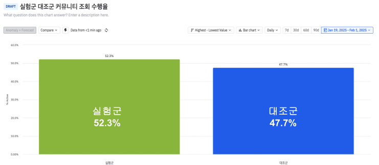

제품 데이터 분석으로
그로스 만들기
자원, 전문성이 부족해도 할 수 있다!
엠플리튜드와 함께
데이터 활용 역량, 업무 리소스가 부족한 상황에서 데이터로 성과내기 : 육아크루 사례공유
Note
엠플리튜드 밋업에서 발표했던 자료입니다. 밋업은 시간의 제약이 있어서 많은 내용을 생략했는데요. 이 자료에서는 그때 못한 이야기도 같이하려고합니다.
데이터 활용에 어려움을 겪는 분들에게 도움이 되길 바라고요. 궁금하신점은 링크드인이나 이메일을 통해 주시면 답변 드리겠습니다.
질답들을 모아서 더 풍부한 콘텐츠로 만드려고 합니다. 부담없이 물어보세요~!
소개
활동
현재 (개인 컨설턴트)
프로덕트 데이터 분석으로 그로스 만들기
이전 (마켓핏랩 솔루션즈)
프로덕트 데이터 분석 도구 도입 및 활용 지원
Note
저는 데이터기반 제품 그로스 만드는 것을 돕는 일을 해왔습니다. 현재는 개인 컨설턴트로 일하고 있습니다.
프로덕트 그로스에 관해 도움이 필요하시면 링크드인으로 DM 주세요. 가벼운 조언에서 부터 실무적인 참여까지 모두 가능합니다.
어느날 저는 엠플리튜드 밋업에서 활용사례 발표가 가능한지 묻는 메일을 받았습니다. 제가 한국 엠플리튜드 사용량 최상위권이라고 하더군요!
흔쾌이 수락하면서 왜 저의 사용량이 많은걸까 그리고 다른 사람의 사용량은 왜 적은 걸까 생각을 했습니다.
이부분이 이발표의 주제이기도 합니다. 발표를 모두 들으시면 사용량이 그렇게 많을 수 있었는지 짐작하 실수 있을 것 입니다.
데이터 활용 생각만큼 쉽지 않다.
graph LR
A[비즈니스 문제 정의] --> B(데이터 분석)
B --> C[데이터 수집 계획 작성]
C --> D[이벤트 수집 코드 구현 및 배포]
D --> E[사용자 데이터 수집]
E --> B
B --> F[실험 설계]
F --> G[실험 수행]
G --> H[실험 결과 분석]
H --> B
H --> I[제품 개선]
I --> J[제품 성장]
- 전문 분석가 없다
- PM, 디자이너, 마케터가 서브 업무로 해야한다
- 잘 모르는데.. 실수하면 어쩌지? 자신이 없다
- 원래 하던일도 많은데 할일이 더 생긴다
- 따라잡아야 할 일이 생각보다 많다. 부담된다
- 어디서부터 시작해야할지 엄두가 나지 않는다
- 제대로된 분석을 하기까지 오래 걸린다
- 데이터로 제품을 변경하기까지 오래 걸린다
- 성장을 만들기까지 오래걸린다
육아크루도 비슷한 어려움이 있었다. 어떻게 육아크루는 데이터를 잘 활용하게 되었을까?
Note
엠플리튜들 사용해보셔서 아시겠지만 데이터를 활용하기위해서 준비해야할 일들이 꽤 있습니다.
위에 보이는 흐름도를 보시면 크게 데이터 분석 환경 준비 과정과 데이터 분석 이후 실험을 통한 제품 개선과정으로 나뉩니다.
이런 일련의 과정을 수행하는데 여러 어려움을 직면하게 되는데 저는 크게 3가지로 분류합니다.
일단 일련의 과정을 잘 수행 하려면 알아야 할 것들이 있습니다. 전문성이 필요한거죠. 그러나 제품팀에 전문 데이터 분석가가 항상 있는 것은 아닙니다.
결국 기존 실무자들이 추가업무로 떠앉게됩니다. 엠플리튜드가 비전문가도 쉽게 분석을 하도록 돕는 도구이긴해도 배워야 할 것이 없는 것은 아닙니다.
아직 충분한 전문성을 갖추지 못했다고 느끼면 아무래도 데이터 분석 활동에 소극적 또는 수동적으로 되기 마련입니다.
업무 리소스도 충분치 않습니다. 다들 아시겠지만 제품팀은 제품 개발 일정이 이미 있습니다.
거기에 추가로 업무가 생기는거죠. 위 흐름도를 보면 알겠지만 추가로 해야 할 일도 생각보다 많습니다.
게다가 할 일들이 잘 모르는 일이라면 작은일도 크게 느껴집니다. 어디서부터 시작해야할지 엄두가 나지않고요.
마지막으로 데이터 활용 업무의 사이클이 너무 깁니다. 위 흐름도의 일련의 작업들을 제대로 소화하는데 길게는 몇달이 걸리기도 합니다. 환경설정만 해도 시간이 꽤 걸립니다.
그리고 제품을 변경하는 실험을 하기전까지는 사실상 사용자에게 실질적인 영향을 미치지 못합니다. 즉 성과를 내기까지 시간이 오래 걸리는거죠.
이는 실무자의 동기에도 영향을 미칩니다. 사용자의 피드백을 빠르게 받는 것만큼 후속 액션에 대한 강한 동기부여도 없다는 것을 잊지마세요.
결국 데이터 활용의 주기가 길어지면 길어질수록 데이터를 더 안보게 되는 악순환이 생깁니다.
육아크루도 비슷한 어령움이 있었습니다. 하지만 이제는 자연스럽게 데이터를 활용하고 있는데요. 육아크루는 어떻게 이러한 어려움을 극복했는지 소개하겠습니다
육아크루 소개
동네 육아 친구를 찾아주는 서비스
주요 기능
지역기반 육아 친구 찾기
지역기반 육아 커뮤니티
제품팀 구성
제품팀의 목표
사용자 리텐션 개선
지난달에 방문한 사용자가 이번달에도 방문하게 하기
Note
육아크루는 지역기반 육아친구 매칭 앱 입니다. 가까운곳에 살고 있는 비슷한 연령대의 아이를 키우는 엄마들끼리 친구를 맺어주는 서비스이죠. 데이팅앱처럼 주기적으로 적합한 친구를 추천해줍니다.
지역기반 서비스 특성을 살려 지역 커뮤니티 기능도 있구요.
제품팀은 개발자 3명(백앤드, 웹 프론트, 앱)과 기획자 1명으로 구성되어 있습니다. 기획자 1명이 데이터를 활용하여 제품을 개선하는 일을 해야했습니다. 앞서 말씀드린 전문성과 업무 리소스가 부족한 상황이었죠.
제품팀의 목표는 사용자 리텐션 개선이었습니다. 정확히말하면 M1 리텐션 개선입니다. 아시겠지만 이는 지난달 방문한 사람의 이번달 재방문 비율을 말합니다.
목표달성을 위한 수단으로 데이터를 사용하기로했고 제가 서포트하기로 했습니다. 데이터를 활용한 팀의 상과는 다음과 같습니다.
육아크루 제품팀 성과
일단 실험부터 하자 (간단한 실험부터 시작하여 실험 많이 하기)
최소한의 자원으로 지금 당장 할 수 있는 간단한 실험부터 시작
피드백을 최대한 빠르게 받고 성과가 있다면 바로 적용한다.
미리 충분한 데이터를 수집하기보다 실험을 수행하면서 점진적으로 데이터들을 수집한다.
Note
전체 사용자 리텐션이 6% 포인트 개선되었고 신규 가입자 리텐션은 15% 포인트 개선되었습니다. 세부 세그먼트를 더 나누면 더 극적인 수치가 나오긴합니다. ㅎㅎ
6% 포인트 개선이 어떻게 보면 적은 수치라고 느끼수도 있지만 육아크루는 이미 리텐션이 높은편이었습니다. 그래서 이정도도 꽤 유의미한 개선이라고 보고 있습니다.
리텐션은 왼쪽 차트 추세처럼 변화했습니다.(실제 수치는 아니니 흐름만 참고하세요) 첫달에는 리텐션 개선을 못했지만 두번째 달부터 점차 개선되기 시작해서 3개월정도 지나니 완만해지는 추세입니다.
6개월간 30회 이상의 실험을 수행한것도 성과로 보고 있습니다. 실험수가 성과의 선행 지표라고 할 수 있습니다.
즉 성과의 원동력은 실험을 많이하는 것입니다. 그리고 육아크루는 어떻게 하면 빨리 실험을 할까를 고민했습니다.
물론 실험을 잘 하는것도 중요합니다. 하지만 더 중요한것은 실험을 일단 하는 것입니다. 일단 하면서 점차 잘해지면 됩니다.
육아크루팀은 당장 실험을 수행하는 것에 초점 을 맞췄습니다. 예를들어 UI문구를 바꾸거나 위치를 바꾸는 정도의 실험을 하는거죠.
빨리 실험하는 것이 중요하기 때문에 데이터 분석 환경 설정도 간소화합니다.
미리 충분한 데이터를 모아서 깊이 있는 분석을 한뒤 실험을 하는게 아니라 실험에 필요한 데이터 위주로 점진적으로 수집합니다.
다시 강조하지만 초기에는 잘하는 것보다는 빨리 많이 하는것이 중요합니다.
이런 접근법을 애자일 방법이라고도 합니다. 앞으로 어떤일이 벌어질지 잘모르는 상황(환경의 변동성이 커서든, 전문성이 부족해서 예측이 안되든)에서 효과적인 방법 입니다.
커뮤니티 글 조회율 올리기 실험 사례
1. 기본적인 수준의 분석으로 시작
- 커뮤니티 글 조회수와 리텐션의 관계 분석
- 커뮤니티 글 조회수 집단별 리텐션 차이 비교하니 조회수가 올라갈수록 리텐션이 올라감
Note
최초 실험 사례를 구체적으로 공유드리겠습니다. 일단 초기에는 수집된 데이터가 적을 수 있습니다. 적더라도 데이터가 있다면 그것을 활용하여 실험의 단서를 찾습니다.
데이터가 아예 없다면 실무자의 직관으로 시작해도 됩니다. 예를들어 육아크루는 친구연결과 커뮤니티가 주요 기능이므로 이 기능을 많이 쓰면 리텐션이 좋지않을까? 하는 가설로 접근해보는거죠.
아무런 기반도 없이 맨땅에 실험을 수행하기 보다는 조금이나마 근거를 가지고 시작하자는 취지 입니다.
속도가 중요하므로 시간과 전문성이 많이 필요한 심도있고 종합적인 분석보다는 단순하면서도 가치가 큰 분석을 진행합니다.
엠플리튜드와 같은 PA 도구가 제공하는 기본 리포트만 활용해도 가치가 큰 분석을 할 수 있습니다. (특히 퍼널 분석이나 리텐션 분석)
육아크루에서는 서비스의 주요 행동과 월간 리텐션의 관계를 분석했습니다. 첨부한 이미지는 커뮤니티 글 조회수별 리텐션 차이를 나타낸 차트입니다.
12월에 커뮤니티글 조회 빈도 수별 세그먼트를 만들었고요. 그에따라 Month1(1월) 리텐션이 어떻게 달라졌는지를 보여주도록 구성했습니다.
12월 이용자만을 대상으로 재방문을 측정했습니다. 12월에 방문해서 커뮤니티글을 조회한 빈도별로 1월에 얼마나 재방문했는지를 본것입니다.
차트에서는 0회와 1회의 간극이 가장 컸습니다. 이 데이터를 근거로 적어도 1회는 시키는 것이 리텐션에 도움이 될 것이다는 가설을 세울 수 있습니다.
리텐션의 차이가 왜 발생햇는지 추가로 분석 할 수도 있으나 데이터도 적고 고도화된 분석을 하기엔 자원과 전문성도 부족하기 때문에 바로 실험으로 넘어갑니다.
초기에는 가볍고 빠르게 실행해보는 것이 중요하다는 것을 잊지마세요. 이 차트는 리텐션과 커뮤니티 조회간 상관관계만을 나타냅니다.
우리는 이들간 인과관계가 있는지 즉 커뮤니티글 조회를 더 많이하게 하면 리텐션이 올라가는지 빠르게 확인하기 위해 실험을 진행했습니다.
커뮤니티 글 조회율 올리기 실험 사례
2. 바로 적용 가능한 간단한 실험으로 검증해보자.
- 실험군 : 홈화면 상단에 커뮤니티 글 표시 vs 대조군 : 기존 순서 그대로
- 실험 배포하면서 관련 데이터 수집 코드도 추가하자. view_detail_crewtalk, click_crewtalk_home ...
Note
최초 분석을 하면서 향후 액션 플랜도 같이 논의했습니다. 커뮤니티글을 어떻게 적은 비용으로 올릴 수 있을지 아이디어를 냅니다. 그러면 실무자 차원에서 다양한 아이디어가 나오게 돕니다.
분석시 논의된 아이디어를 바탕으로 간단한 실험 설계서를 작성합니다. 실험 자체가 단순하기 때문에 설계서 내용도 간단합니다.
주요 가설과 확인해야 할 지표, 그리고 추적해야 할 이벤트 목록 정도로 구성합니다.
첫 실험안은 홈화면에서 커뮤니티 콘텐츠를 상단에 노출 하는 것이였습니다. 콘텐츠의 순서만 바꾸면 되는거라 간단히 테스트 할 수 있는거죠.
실험 설정은 엠플리튜드가 아닌 다른 도구를 사용했습니다. 중요한 것은 지금 당장 별다른 수고를 들이지 않고 실험을 하는 것이 중요했고,
마침 설치된 다른 실험 설정 도구가 있어서 사용했습니다.
육아크루는 1주일마다 앱을 배포를 했습니다. 이 시점에 맞춰서 실험도 진행했습니다. 실험은 2-3주정도 데이터를 쌓은 후 결과 분석을 했습니다.
매주 비슷한 절차를 통해 쉬지않고 실험을 수행했습니다. 특히 리텐션 분석과 퍼널 분석을 많이 활용하여 실험 아이템을 뽑았습니다.
커뮤니티 글 조회율 올리기 실험 사례
3. 기본적인 수준의 결과 분석 및 후속 실험 설계
- 실험군의 커뮤니티 글 조회율이 올라기지 않음
- 홈화면 사용행태가 생각과 다르다는 배움
- 후속 실험 : 커뮤니티 글 조회율을 올리는 다른 방법 시도 (추천글, 팝업 등)
- 후속 실험 : 홈화면 배치 최적화 실험
Note
실험 자체가 단순하기 때문에 실험 결과 분석도 간단했습니다. 실험군이 대조군에 비해 해당 행동을 더 수행했는가? 그래서 재방문율이 올라갔는가?
기본적으로 이 두가지만 증명하면 되는 것이죠.
최초 실험은 첫번째 관문인 실험군이 대조군보다 커뮤니티 글 조회율이 더 높은가를 통과하지 못했습니다. 그러니 두번째 관문인 재방문은 볼것도 없었죠.
그렇게 첫 실험은 실패했습니다. 이 실패를 기반으로 바로 다음 실험들을 수행했습니다. 홈화면 상단 노출은 커뮤니티글 조회율을 올리지 못하니 다른 방식을 써보기로 했습니다.
실험을 수행하면서 사용자에 대한 배움도 있지만 데이터 활용 능력 측면에서의 배움도 있습니다.
실험기획에서부터 결과분석까지 완전한 절차를 완료한 경험이 생긴거죠. 절차적인 배움도 있고 실험 설계에 대한 배움도 있고 분석에 관한 배움도 얻게 됩니다.
이런 경험이 누적되면서 점점 더 데이터 활용을 잘하게 됩니다.
커뮤니티 글 조회율 올리기 실험 사례
4. 유의미한 성과가 있다면 제품에 적용하기
- 조건부 팝업이 커뮤니티글 조회율을 올림
- 재방문에는 유의미한 차이가 없음
- 최종 목적을 달성하지 못했지만 커뮤니티 글 조회를 늘리는 방법은 발견했으므로 적용

Note
실험을 반복하면 성공할때가 옵니다. 육아크루도 커뮤니티글 조회율을 올리기 위한 다양한 실험을 했고 성공했습니다.
특정 기간동안 커뮤니티 글을 보지 않은 사용자에게 추천 팝업창을 띄우는 방법이 먹힌거죠.
하지만 궁극적인 목표인 재방문율은 실험군과 대조군이 별차이가 없었습니다.
반쪽짜리 성과이긴 했지만 커뮤니티 활성화도 제품팀이 해야할일중에 하나였으므로 적용하기로 결정했습니다.
매주 쉬지않고 반복하여 제품 개선 실험하고 배우기
Note
이런 과정을 끊임없이 반복했습니다. 스케줄은 매주 실험계획으로 빡빡했고, 실험기획서와 결과분석 리포트는 쌓여갔습니다.
성과를 떠나서 이 모든것이 자산입니다. 쌓이는 문서 하나 하나가 제품과 사용자에 대한 인사이트를 담고 있는 것입니다.
작은 성과들이 쌓이고 제품과 사용자에 대한 이해가 깊어집니다. 데이터를 다루는것도 능숙하지고요. 실무자의 자신감은 점점 높아집니다.
즉 제품과 함께 팀이 성장하는 것이죠.
제품을 개선하는 [가벼운 실험] 자주 하기
graph LR
A[간단 분석 + 가벼운 실험 설계] --> B[실험 + 데이터 수집]
B --> C[실험 결과 분석]
C --> D[제품 개선]
C --> A
D --> F[제품 성장]
- 데이터 활용 절차를 간소화하여 수행 부담 줄이기
- 실험을 많이하여 단시간에 많은 피드백을 받기
- 실험으로 검증한 유의미한 개선사항은 바로 적용
가벼운 실험의 장점
적은 자원 투입으로 실패에 대한 부담이 적음
많은 자원을 투입하면 실패에 대한 부담이 그만큼 커진다
신속한 피드백으로 의사결정에 즉시 도움이 됨
제품 개발 모든 의사결정에 도움
반복 실험을 통해 데이터 활용 능력이 자연스럽게 향상
처음엔 어려웠던 것도 나중엔 쉬워진다.
Note
이런 과정을 제품을 개선하는 가벼운 실험 자주 하기 방식 이라고 합니다.
기존의 크고 무거운 프로세스를 간소화하여 수행의 부담을 줄이고요.
최대한 실험을 자주 많이 해서 사용자의 직접적인 피드백을 빠르게 받는데 집중합니다.
그리고 이 과정에서 얻는 배움을 효과적으로 활용하여 성과를 만듭니다.
이러한 '가벼운 방법'은 여러가지 장점을 가지고 있습니다.
첫째로 리스크가 적다는 것입니다. 작게 벌린일이니 실패해도 타격이 별로 없습니다. 반면에 얻는것은 많죠.
일이 커질수록 성공에 대한 압박이 커지고 그러면 확실한 성공을 만들기위해 더 많은 일을해야하는 악순환을 피할 수 있습니다.
둘째로 피드백을 빠르게 받는 것입니다. 제품과 사용자에 대한 배움은 제품관련 모든 의사결정에 참고 할 수 있습니다.
배움이 깊어질수록 더 좋은 의사결정을 할 수 있습니다. 더 좋은 실험을 할 수 있습니다. 더 좋은 분석을 할 수 있습니다.
육아크루는 첫번째 실험에서의 배움으로 홈화면의 중요성을 다시 생각하게 되었고 예정되었던 홈화면 개편 우선순위를 조정 할 수 있었습니다.
마지막으로 수많이 반복되는 과정을 통해 팀이 성장한다는 것입니다.
제품과 사용자에 대한 배움은 말할것도 없고, 데이터 활용 역량이 올라갑니다. 처음엔 어려웠던 일은 쉬운일이되고 예전엔 엄두도내지 못했던일도 이제는 도전해볼만한 일이됩니다.
지난 몇개월간 수십번의 실험을 한 기획자를 생각해보세요. 짧은시간에 이토록 압축적인 경험을 해본 사람은 드물것입니다. 그 실무자는 얼마나 성장했을까요?
QnA
질문 1 : 기억에 님는 실험은 무엇이었나요?
커뮤니티 조회율을 올리기 위한 실험이 기억남니다. 홈 화면 상단에 콘텐츠를 배치하면 쉽게 올라갈 것이라고 생각했는데 예상을 벗어난점이 인상적이였습니다.
첫 실험이기도 했고요. 특정 행동을 더하게 만드는게 생각처럼 쉽지않구나하는 배움도 있었습니다.
여러번의 시도끝에 수행률을 결국 높혔구요.
해당 콘텐츠를 특정 기간동안 조회하지 않은 사용자에게 팝업을 표시했던 방법이 효과적이 였습니다.
이렇게 알아는 방법을 다른 행동을 유도하는데도 활용되었습니다.
질문 2 : 실험의 우선순위는 어떻게 정하셨나요?
흔히 가설을 모으고 ICE 점수라는 것을 매겨서 우선순위를 정하는데요. 이런 과정도 자원과 전문성이 필요한 일입니다.
준비가 잘 안된상황에서는 의미있는 가설을 뽑기도 어렵고 우선순위를 정하는 것도 쉽지 않습니다.
육아크루에서는 실무자가 동의하고(우선순위가 낮지않은 의미있는 실험이다라는 동의) 쉬운 실험을 하나 빠르게 수행했습니다. 앞서 말씀드렸듯이 빠르게 실험을 하는것이 중요합니다.
그리고 실험의 속도가 빠르면 생각보다 빨리 가설들이 소진됩니다. 어떻게하면 자주 실험을 하게 만들지 고민해보시길 추천드립니다.
질문 3 : 실험할때마다 텍소노미 설계는 어떻게 하셨나요?
이벤트 수집 계획을 짜다보면 해당 경험과 관련된 행동을 최대한 많이 수집하고 싶은 욕심이 생기기 마련입니다.
이때 욕심을 적당히 조절하지 않으면 일이 커집니다. 한번에 모든 문제를 풀고 싶은 욕심에서 비롯된다고 생각하는데요. 내려놓는 연습이 필요합니다.
육아크루에서 이벤트 설계할때 대체로 실험과 관계된 주요 이벤트만 수집하도록 했습니다.
욕심이 날때면 다음 기회가 금방 돌아온다고 생각하며 마음을 다잡곤했습니다.
감사합니다
궁금하신점이 있으시면 이메일을 주시거나 링크드인으로 DM주세요!